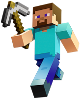
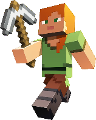
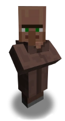
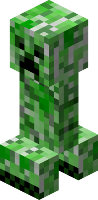
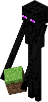
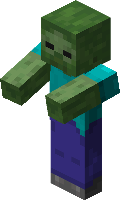
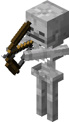

| Characters | Description | Image |
|---|---|---|
| Steve | The iconic protagonist of Minecraft, Steve is a blocky character who represents the player. He can mine blocks, craft items, and embark on adventures in the blocky world. |  |
| Alex | Alex is an alternative playable character, offering more gender diversity in the game. Like Steve, she can mine, craft, and explore the vast Minecraft universe. |  |
| Villagers | These non-player characters (NPCs) populate villages and trade various goods with players. They play a vital role in Minecraft's economy and offer quests and valuable items. |  |
| Creepers | One of the most recognizable enemies, Creepers are hostile creatures that explode when they get close to players. They pose a constant threat and can damage structures and players. |  |
| Enderman | Tall, dark, and mysterious, Endermen are neutral creatures until provoked. They have the ability to teleport and are associated with The End dimension. |  |
| Zombies | Mindless undead creatures that roam the Minecraft world, zombies are hostile and attack players on sight. They can spawn in various forms, including zombie villagers. |  |
| Skelatons | One of the most recognizable enemies, Creepers are hostile creatures that explode when they get close to players. They pose a constant threat and can damage structures and players. |  |